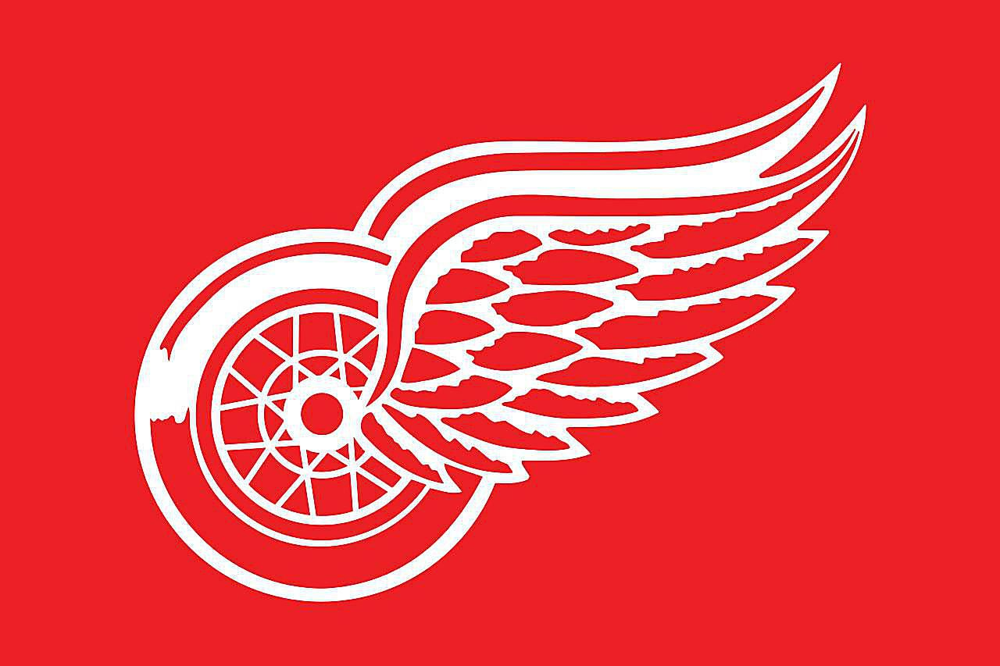

About the Detroit Red Wings
The Detroit Red Wings are one of the most successful franchises in NHL history. Founded in 1926, they have won multiple Stanley Cups and have a legacy of legendary players.
The Red Wings' logo, featuring a winged wheel, represents Detroit’s automotive history and symbolizes speed and power.
Notable Players
- Steve Yzerman: Legendary captain who led the team to three Stanley Cup victories.
- Nicklas Lidström: One of the greatest defensemen in NHL history.
- Gordie Howe: "Mr. Hockey," one of the most iconic figures in the sport.
2024-2025 Roster Favorite Players
| Number | Name | Position | Age | Height | Weight |
|---|---|---|---|---|---|
| 71 | Dylan Larkin | Center | 28 | 6'1" | 198 lbs |
| 23 | Lucas Raymond | Right Wing | 22 | 5'11" | 182 lbs |
| 59 | Tyler Bertuzzi | Left Wing | 29 | 6'1" | 192 lbs |
| 2 | Moritz Seider | Defense | 23 | 6'4" | 207 lbs |
| 39 | Alex Nedeljkovic | Goalie | 29 | 6'0" | 203 lbs |